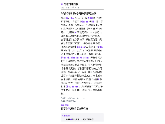

每天高频班次的 AI 领域要闻速览：发生了什么，为什么重要。

缩略图加载失败，点此查看海报谷歌11月4日宣布，使用其K-12教育软件的学校若不选择启用Gemini等AI工具，学生将无法使用谷歌搜索。 谷歌教育业务副总裁克里斯·菲利普斯对《纽约时报》表示，“搜索与AI已深度整合”，未启用的学校学生将看到校方提示该功能不可用。 此举迅速引发政界批评：参议员伯尼·桑德斯称其为“勒索”，参议员布卢门撒尔称谷歌更在意把Gemini推进校园；前FTC主席莉娜·汗与纽约市长马姆达尼则指其滥用垄断地位、排斥竞争。 谷歌回应称，Gemini、Gemini Notebook与搜索默认均为关闭状态，学校可分别开启，并称此举是为给学校更多控制权、回应教育者近几个月的反馈。 谷歌还表示正为学生账号开发“引导式学习”功能，例如在数学题上提示学生回顾指数除法规则，而非直接给出答案。 教育者则担心搜索内置的AI概览会让学生不愿自行寻找答案，而对必须使用Chromebook和谷歌教育工具的众多学生来说，换用其他搜索引擎并非简单选项。
依据：可提取原文正文 · 可提取正文；不含交互图表、图片或付费隐藏内容
TechCrunch AI00:17原文链接 ↗